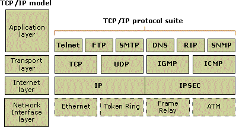

Short for Transmission Control Protocol/Internet Protocol, the suite of communications protocols used to connect hosts on the Internet. TCP/IP uses several protocols, the two main ones being TCP and IP. TCP/IP is built into the UNIX operating system and is used by the Internet, making it the de facto standard for transmitting data over networks. Even network operating systems that have their own protocols, such as Netware, also supportTCP/IP.
Courtesy of Webopedia